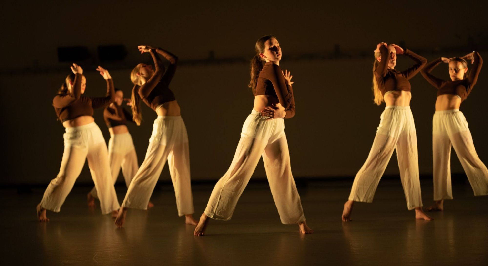
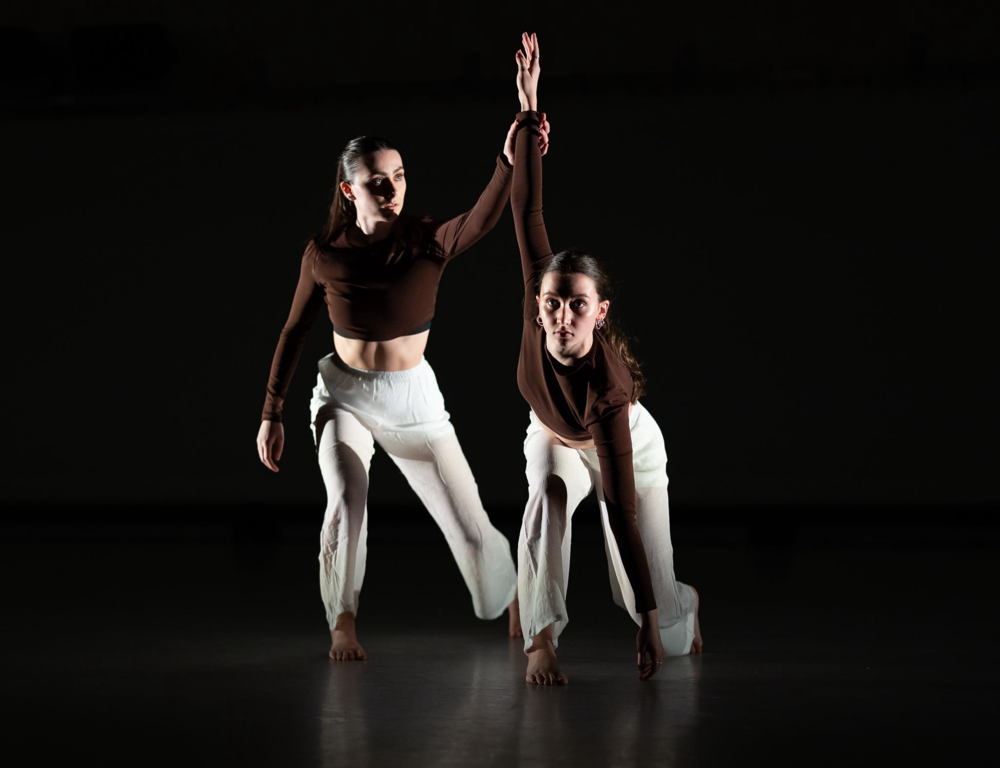
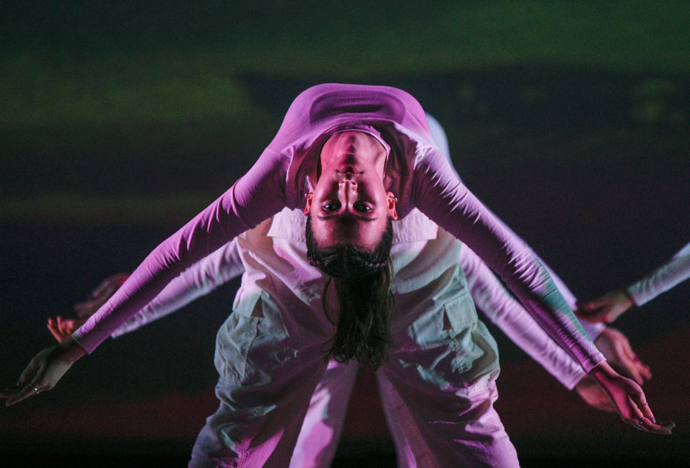
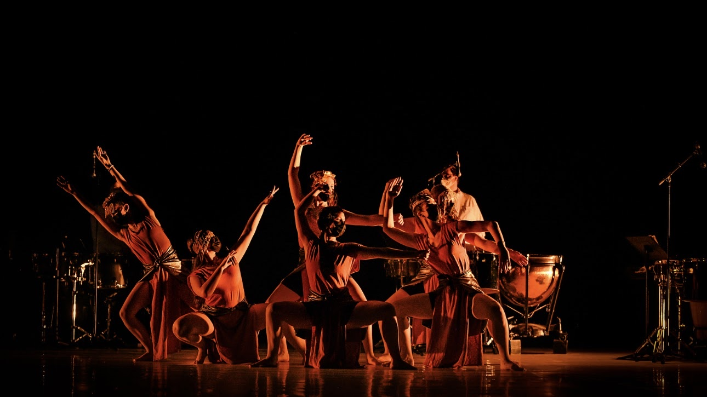
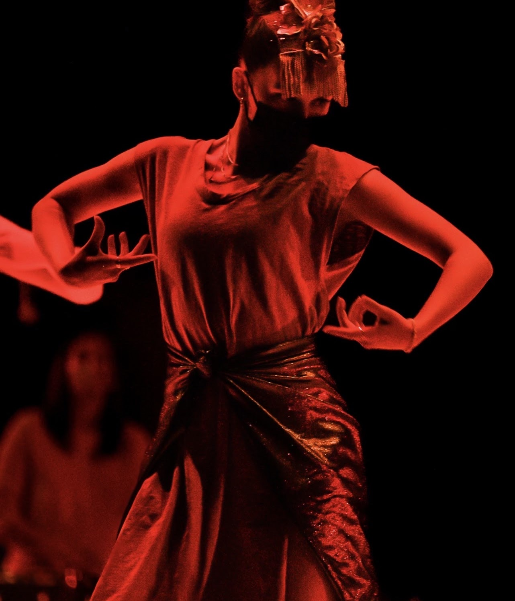
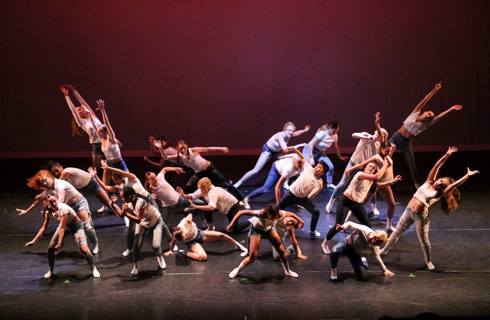
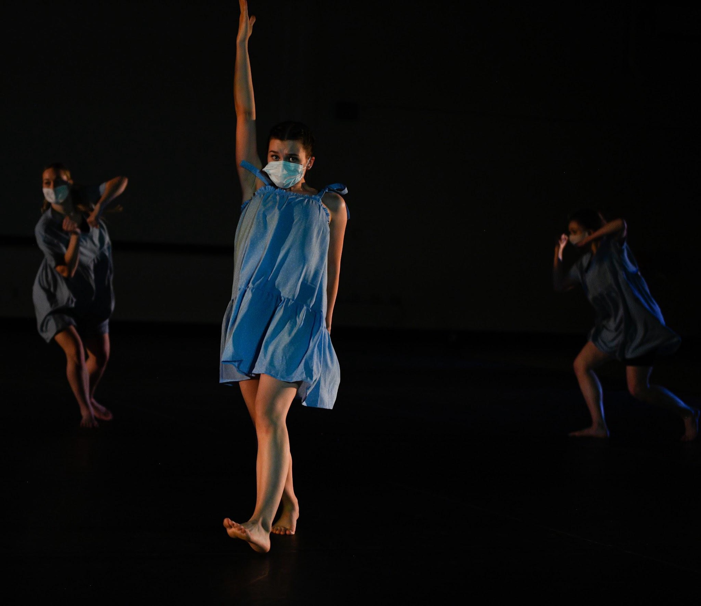
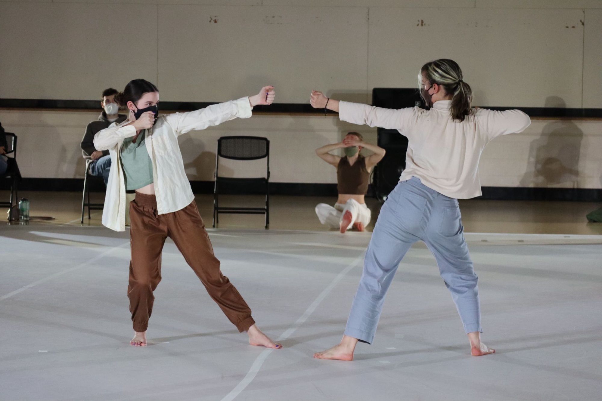
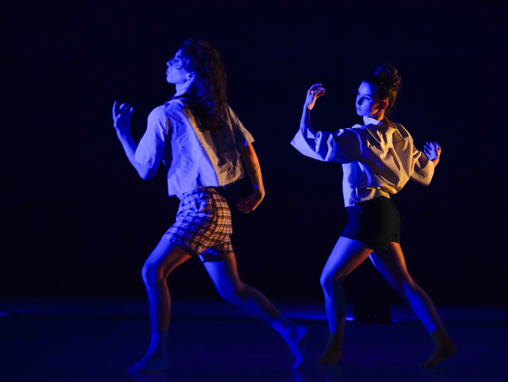

Performance
- Dancer and principal dancer
A dancer and principal dancer in collegiate and concert work.
Carson Kelly (she/her) is a performer, dance educator, videographer, and choreographer. Ms. Kelly began dancing in elementary school and has been training from there on. Ms. Kelly trained at D.A.N.C.E. by Kristin in Collinsville, CT for 9 years, 6 of which she participated in competitive dance. Ms. Kelly has trained in ballet, pointe, tap, jazz, lyrical, contemporary, and modern.
Aside from training, Ms. Kelly has also taken on various performance opportunities throughout her dance career, such as the Diving Inward Senior Thesis Concert (Sophie Leveille and Niamh Rollins), Meeting/Thunderstorm (Lauren Cox) and The Nutcracker (Fisher Ballet Productions), and has even taken on the role of Stage Manager for Thomas Vacanti’s production of Scheherazade. Ms. Kelly continues to pursue performance.
Collegiate dance
- I Have Also Been There: Dancer · Totman Performance Lab / Victoria Winter
- Meeting/Thunderstorm: Principal Dancer · Fine Arts Center / Lauren Cox
- Concurrence Sighting: Dancer · Totman Performance Lab / Stephanie Schramm
- Vestige: Dancer · Mount Holyoke / Hannah Liberman
- Painted Abstractions: Principal Dancer · Totman Performance Lab / Niamh Rollins
- Ever Changing Lens: Principal Dancer · Totman Performance Lab / Sophie Leveille
Concert dance
- Hang Together: Dancer · Academy of Music Northampton / Dana Wilson
- The Nutcracker: Principal Dancer · Fisher Ballet Productions / Liane Fisher
Field experience
- Scheherazade: Stage Manager · Totman Performance Lab / Thomas Vacanti
- UM/HC Faculty Show ‘23: Stage Manager · Totman Performance Lab
- Studio Owner Internship: Intern · D.A.N.C.E. by Kristin, Collinsville, CT
- Senior Thesis Works: Videographer · Totman Performance Lab
Training
- Jazz: Allison Vilardi, Lauren Cox, Alvon Reed
- Ballet: Allison Vilardi, Kristin Vilardi, Liane Fisher, Thomas Vacanti
- Contemporary: Allison Vilardi, Molly Fletcher Lynch
- Modern: Paul Dennis, Molly Fletcher Lynch
- Hip Hop: Duane Lee Holland
- Tap: Kristin Vilardi
Gallery









